Introduction
Web scraping often hits a wall when websites deploy CAPTCHAs to block automated access. This project builds a robust web scraping pipeline that can detect multiple types of CAPTCHAs and automatically solve text-based ones (image + text input field).
The detection module identifies several CAPTCHA providers (reCAPTCHA, hCaptcha, Cloudflare Turnstile, text CAPTCHAs, challenge pages), but automated resolution targets text CAPTCHAs only. It combines a YOLOv8 model (character detection) trained on synthetic CAPTCHAs then fine-tuned on real-world CAPTCHAs, with a Gemini vision LLM fallback — all exposed through a FastAPI API and orchestrated by Playwright browser automation.
Supported CAPTCHA Types
The detect.py module automatically identifies CAPTCHA presence by analyzing the DOM
(iframes, selectors, keywords, URLs). Detection is broad, resolution is targeted:
| Type | Example | Detection | Resolution |
|---|---|---|---|
| Text CAPTCHA (image + input) | Yes | Yes (YOLO + Gemini) | |
| reCAPTCHA (v2, v3) |
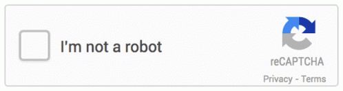 |
Yes | No |
| hCaptcha |
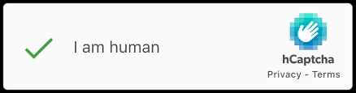 |
Yes | No |
| Cloudflare Turnstile |
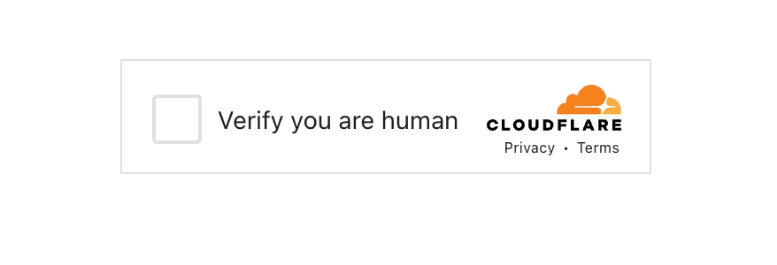 |
Yes | No |
| Challenge pages |
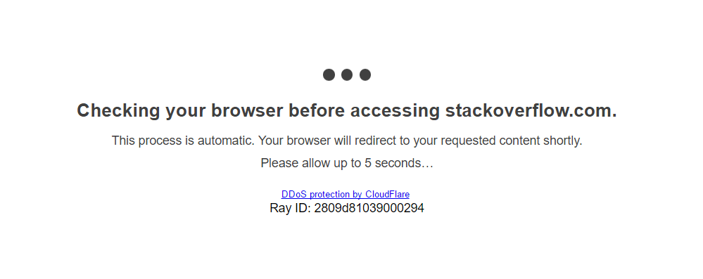 |
Yes | No |
Click to view example websites
Architecture & Pipeline
The API serves as a bridge between the browser automation layer and the ML models. The solver script sends the extracted CAPTCHA image to the API via HTTP, which handles inference and returns the solved text.
graph TB
classDef script fill:#1f6feb,stroke:#58a6ff,stroke-width:2px,color:#fff,rx:8,ry:8
classDef box fill:#161b22,stroke:#30363d,stroke-width:2px,color:#e6edf3,rx:8,ry:8
MainScript["⠶ run_captcha_solver.py\nProduction script"]:::script
Webscraping["webscraping/\n ⠶ browser.py\n ⠶ detect.py\n ⠶ extract.py\n ⠶ fill.py"]:::box
API["API FastAPI (api/)\n ⠶ /solve — YOLO\n ⠶ /solve-llm — LLM\n ⠶ /solve-auto"]:::box
Models["models/\n ⠶ yolo_ocr.py\n ⠶ llm_ocr.py\n ⠶ weights/"]:::box
MainScript --> Webscraping
MainScript --> API
Webscraping -- "HTTP" --> API
API --> Models
End-to-end Pipeline
The full pipeline for solving a text CAPTCHA:
- Navigate to the target URL (Playwright headless browser)
- Dismiss cookie banners (tarteaucitron, Ezoic, generic CMP)
- Detect the CAPTCHA (DOM analysis: iframes, selectors, keywords, URLs)
- Extract the CAPTCHA image (base64 / download / Playwright screenshot)
- Solve via the API — Cascade mode: YOLO finetuned → Gemini fallback
- Type the text character by character (human-like simulation with random delays)
- Submit the form
- Verify the result (success message / redirect / re-detection)
- If failed → retry (up to max-retries with a fresh CAPTCHA)
Dataset & Roboflow
Building a reliable character-detection model required curating two distinct datasets: one synthetic (publicly available) and one real (scraped and annotated manually).
Synthetic Dataset (Baseline)
The baseline model was trained on the Yolo-Captcha-Test dataset from Roboflow Universe — 2,415 training / 674 validation / 340 test images covering 62 classes (0-9, a-z, A-Z).
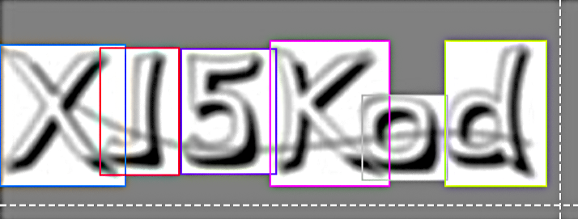
Synthetic CAPTCHA sample from Roboflow UniverseReal CAPTCHA Collection
305 CAPTCHAs were scraped automatically from the target site using
scripts/data_prep/01_scrape_captchas.py.
The script navigates to the form, extracts the CAPTCHA image, and saves it locally.
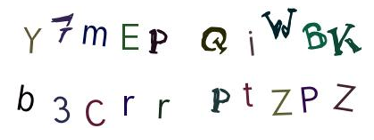
Examples of real CAPTCHAs scraped from the target siteAnnotation Workflow
The annotation process was iterative, targeting the same 62 classes (0-9, a-z, A-Z):
- 155 images annotated manually on Roboflow (bounding boxes around each character)
- An intermediate YOLO model trained on these 155 images
- The intermediate model pre-annotated the remaining 150 images (
scripts/data_prep/02_auto_annotate.py) - Manual correction of the pre-annotations on Roboflow
- Final dataset exported via Roboflow API: 235 train / 50 valid / 25 test
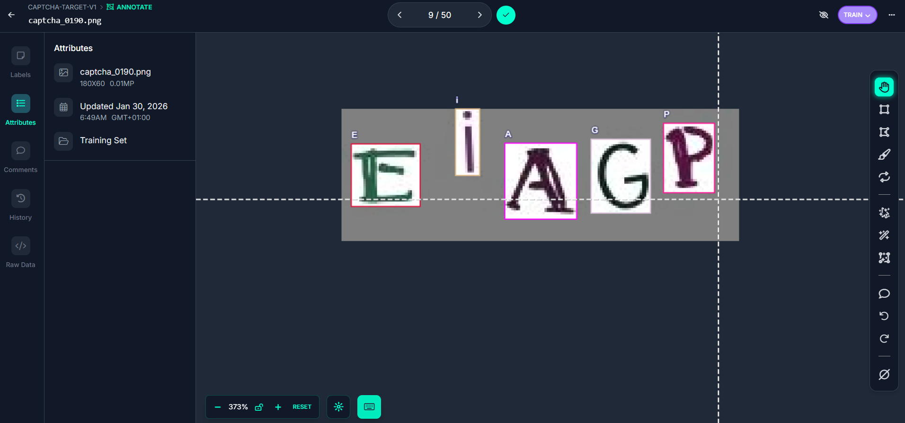
Annotation workflow on Roboflow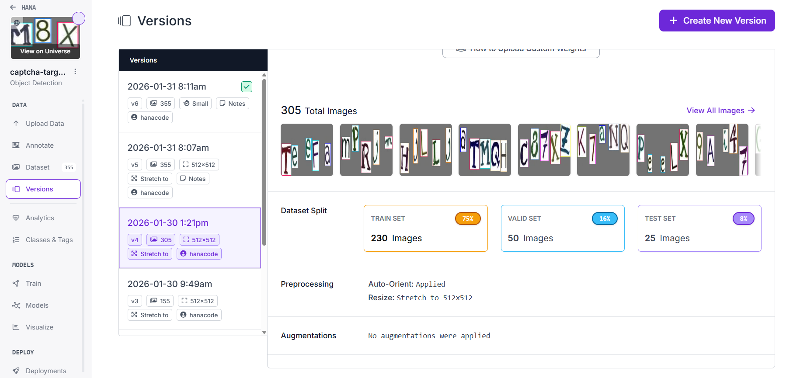
Final dataset split on Roboflow — view projectModel Training & Results
What is YOLO?
YOLO (You Only Look Once) is a real-time object detection model. Unlike image classifiers that output a single label per image, YOLO divides the image into a grid and predicts bounding boxes with class probabilities in a single forward pass. We use YOLOv8s (small variant from Ultralytics) to detect individual characters in the CAPTCHA image — each character is an "object" with its bounding box and class (one of 62: 0-9, a-z, A-Z). Characters are then sorted left-to-right to reconstruct the text.
What is Gemini?
Google Gemini is a multimodal large language model capable of understanding images. We use it as a fallback: when YOLO is not confident enough, the CAPTCHA image is sent to Gemini with a prompt asking it to read the text. Gemini can generalize to CAPTCHA styles it has never seen, but is slower and requires an API call. The cascade strategy (YOLO first → Gemini if needed) balances speed and accuracy.
Phase 1: Baseline (Synthetic CAPTCHAs)
- Dataset: Yolo-Captcha-Test on Roboflow — 2,415 train / 674 valid / 340 test images
- Classes: 62 (0-9, a-z, A-Z)
- Model: YOLOv8s (small) trained for 120 epochs on Google Colab (NVIDIA L4)
- Augmentations: rotation 15°, scale 0.4, shear 5, perspective — mosaic/mixup disabled (they mix characters across images)
- Grid search: best config
imgsz=640, conf=0.15, iou=0.6
Baseline Results
Phase 2: Fine-tuning (Real CAPTCHAs)
- Target site: metropolegrandparis.fr (contact form)
- Collection: 305 CAPTCHAs scraped automatically
- Annotation: 155 images annotated manually on Roboflow, then an intermediate YOLO model helped pre-annotate the rest
- Final dataset: exported via Roboflow API — 235 train / 50 valid / 25 test (view project)
- Transfer learning: from baseline model, lr0=0.001 (10x smaller), freeze=10 layers, 100 epochs, patience=15
Fine-tuned Results
Datasets are different (synthetic vs real), so comparison is indicative. The fine-tuned model performs well on the target site's CAPTCHAs despite a small test set (25 images).
Phase 3: Gemini Fallback (Vision LLM)
When YOLO is not confident enough, the API automatically falls back to Gemini:
- Empty YOLO text
- Fewer than 4 characters detected
- Average confidence < 0.70
The cascade strategy (YOLO → Gemini) combines the speed of a specialized model with the generalization ability of a vision LLM.
Success Examples
GIFs of successful CAPTCHA solves recorded with the --record flag,
showing the full pipeline: detection → extraction → typing → submission.
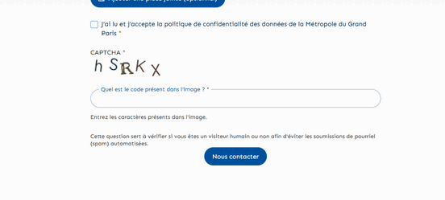
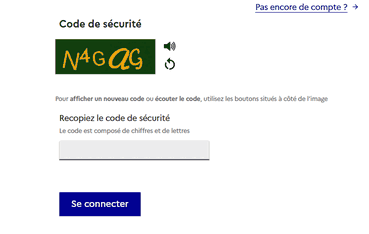
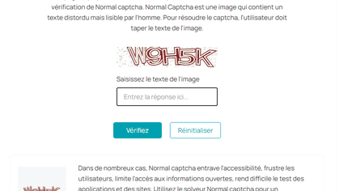
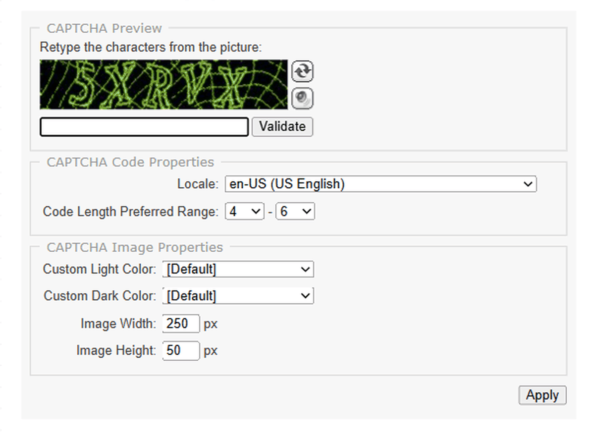
Record your own: uv run python -m scripts.run_captcha_solver --url "..." --record
Installation & Usage
Installation
# Clone the project
git clone https://github.com/HanaT-DS/captcha_project.git
cd captcha-project
# Create virtual environment
uv venv
# Install dependencies (Python >= 3.12)
uv sync
# Install Playwright browser
uv run playwright install chromiumConfiguration
Create a .env file at the project root:
GOOGLE_API_KEY=... # Google API key (for Gemini vision)
ROBOFLOW_API_KEY=... # Roboflow API key (for dataset export)Start the API
uv run python -m scripts.run_apiThe API is available at http://localhost:8000 (Swagger docs at /docs).
Run the Solver
# Cascade mode (default) — YOLO finetuned + Gemini fallback
uv run python -m scripts.run_captcha_solver \
--url "https://www.metropolegrandparis.fr/fr/formulaire-de-contact"
# Visible mode (debug)
uv run python -m scripts.run_captcha_solver \
--url "..." --no-headless
# Record a GIF of the solve
uv run python -m scripts.run_captcha_solver \
--url "..." --record
# Type the text without submitting the form
uv run python -m scripts.run_captcha_solver \
--url "..." --no-headless --no-submit
# Force a specific solver
uv run python -m scripts.run_captcha_solver --url "..." --solver yolo
uv run python -m scripts.run_captcha_solver --url "..." --solver geminiRun Tests
# Test CAPTCHA detection on real URLs
uv run python -m tests.test_detect
# Test image extraction
uv run python -m tests.test_extract
# Test full pipeline (detect → extract → solve → fill)
uv run python -m tests.test_fill
# Test YOLO OCR on a single image
uv run python -m tests.test_run_ocr --model finetuned_v1 --image "path/to/captcha.png"
# Test Gemini OCR on a single image
uv run python -m tests.test_run_llm --image "path/to/captcha.png"API Endpoints
| Method | Endpoint | Description |
|---|---|---|
| POST | /solve | YOLO resolution (specific model) |
| POST | /solve-llm | Gemini resolution (vision) |
| POST | /solve-auto | Cascade YOLO → Gemini (recommended) |
| GET | /models | List available models |
| GET | /health | Health check |
Project Structure
Conclusion & Future Work
Conclusion
This project demonstrates a complete pipeline for automated text CAPTCHA solving, from browser-based detection and extraction to character-level recognition using YOLO and a Gemini vision LLM fallback. The cascade strategy balances speed and generalization, achieving reliable results on both synthetic and real-world CAPTCHAs.
Future Work
-
Advanced detection methods — Currently, detection relies on DOM analysis
(iframes, CSS classes, keywords). Future improvements include:
- Network traffic interception: Listen for requests to known security domains
(
api.google.com,challenges.cloudflare.com,cdn.arkoselabs.com) using Playwright's native request interception - Server response analysis: Detect blocking pages via HTTP status codes (403, 429) and page content ("Just a moment...", "Verify you are human", "Access Denied")
- Network traffic interception: Listen for requests to known security domains
(
- Generalize resolution to other CAPTCHA types — Extend the solver beyond text CAPTCHAs to handle image-based challenges (reCAPTCHA v2, hCaptcha, FunCaptcha)
- Retrain YOLO on more real-world CAPTCHAs — Expand the fine-tuning dataset with a larger variety of real CAPTCHA styles, fonts, and distortion levels to improve robustness
- Stealth mode — Implement browser fingerprint evasion techniques (WebDriver flag masking, navigator property spoofing, human-like mouse movements) to reduce detection by anti-bot systems
Technologies
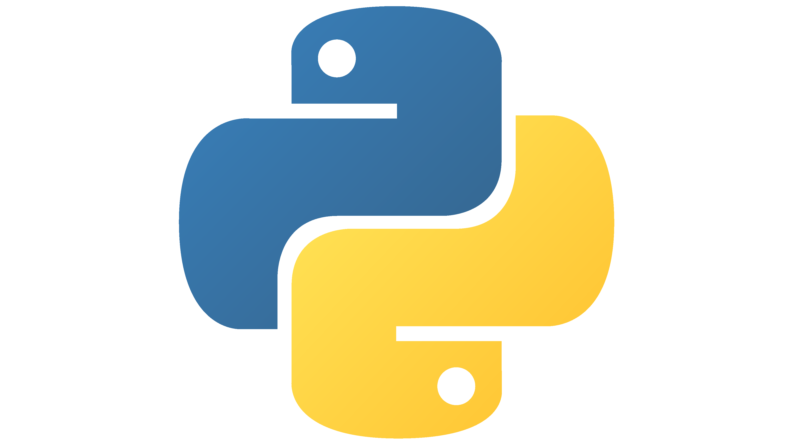
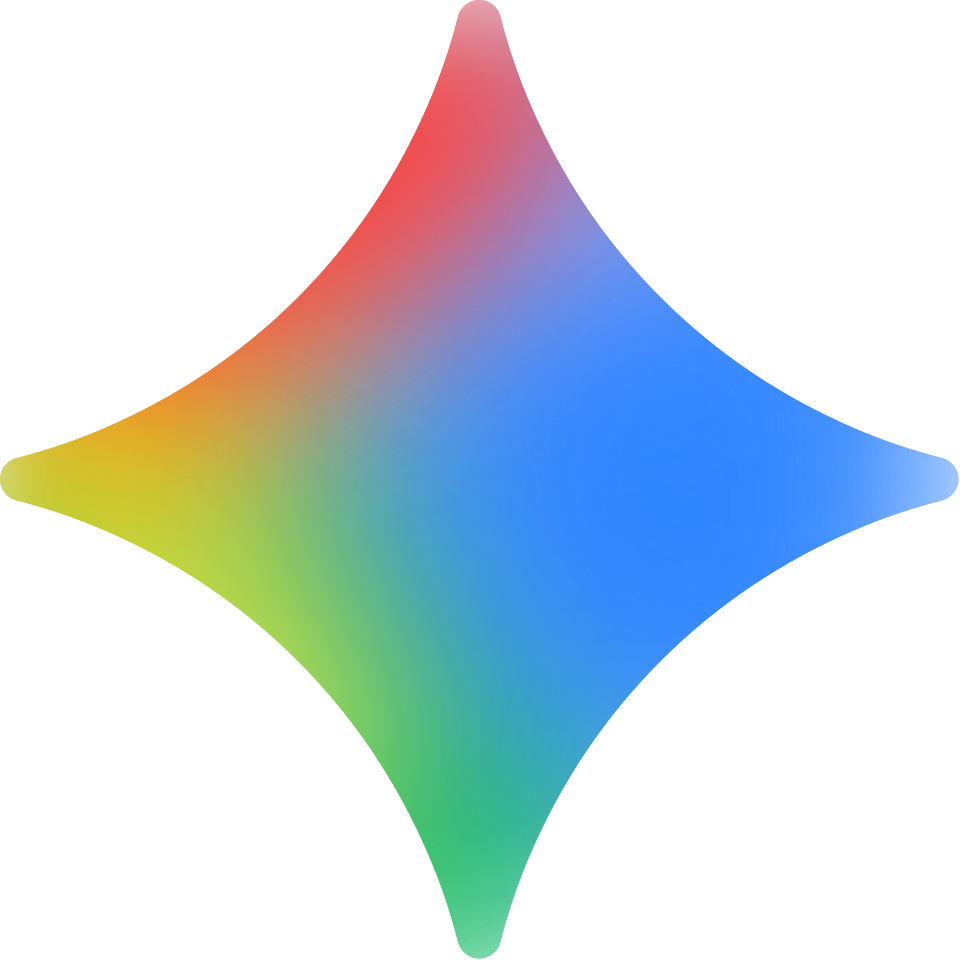
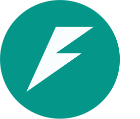